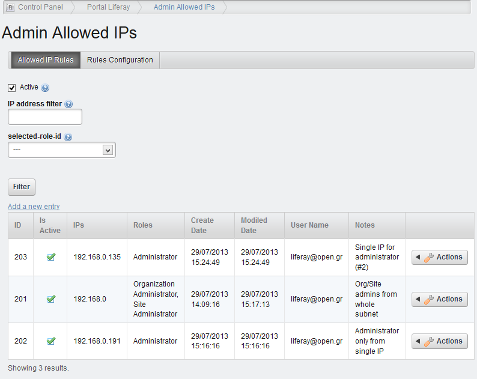

Role Access Lists
(CP Portlet & Hook Plugins)
Short Description
Definitions
Description
Role Access Lists Portlet
Role Access Lists Tab
Rules Configuration Tab
Role Access Lists Hook
Short Description
Have you ever been in need of a way to restrict Control Panel access to administrative users when they attempt login from outside of your network ?
Well, here’s a portal-wise simple security plugin restricting login to authorized users when they attempt access without having the desired combination of IP address and portal role set by the portal administrator herewith.
Definitions
- A user is defined as any registered portal user, who is assigned any system or user-defined portal role.
- An IP address is defined as the IP address of the user’s workstation running the browser trying to gain authorized access (login) to the portal.
- A role is defined as any system or user-defined portal role, which is assigned to a user or a group of users.
- A redirect url is any valid friendly portal url, where a user will be redirected to, when one fails to satisfy all defined restriction rules.
- A rule is any combination of a set of IP addresses and a set of portal user roles, which, when any match is true, login permission to such user is granted.
Description
“Role Access Lists” plugin is very useful when you wish to handle the definition and control of specific access rules, when a user with administrative rights tries to sign in to the portal from an unauthorized IP address set by the administrator, so that you can restrict such access.
Each rule is defined as a list of valid IP addresses, from where a user having any of the defined set of portal roles will be allowed to sign in. If a user with any of the defined roles attempts login access from an IP address other than the ones defined within the rule, then the rule is set to false. When any single pair (IP address + role) of a rule’s defined information is evaluated to true, then the login access to the portal is being granted to that user.
Multiple rules can be defined, each one having a different set of IP addresses and a different set of portal roles. When any single pair (IP address + role) of any rule is evaluated to true, then the login access to the portal is being granted to that user. When all the pairs of all rules are evaluated to false, then the login access to the portal is being restricted to that user.
The plugin consists of two parts:
Role Access Lists Portlet
The Role Access Lists portlet is a “portal section” administrative (control panel) portlet. It is divided in 2 tabs, the first of which is the rule definition section, while the second is a portlet configuration section, common for all rules.
Role Access Lists Tab
In the Role Access Lists tab, the initial (default) view shows the list of all the rules that have been defined by the administrator, unless some of the search filters on top of the page have been used. Such filters include:
- All/Active/Inactive (list of values): Select a value from the list to show (a) all, (b) only the active, (c) only the inactive rules respectively (see below for the definition of active/inactive rules)
- IP address: Enter an exact or a part of an IP address to show only the rules starting from or matching the entered address
- Role (list of values): Select one of the available portal roles to show only the rules matching the selected role
If there are no rules defined, then the form is empty and the only option is to “Add a new entry”.

When adding a new Role Access List entry or editing an existing one you can define the following combinations of IP addresses and portal roles:
- IP addresses (entry fields): Entered in the IP address partitioned entry field and shown in the Selected IPs table:
- One IP address
- Multiple IP addresses (list)
- Range of IP addresses by eliminating one of the last 2 parts (i.e. 195.47.132 or 192.47)
- Roles (tables): Selected one-by-one from the Available Roles table on the left and shown in the Selected Roles table on the right
- Active (checkbox): Select this option if you wish this rule to be actually activated or just saved as inactive for future use or other historical reason
- Notes (text field): In case the administrator wishes to enter some notes for his/her own documentation
Rules Configuration Tab
In the Rules Configuration tab the global settings that can be defined by the administrator are:
- Redirect URL (entry field): A friendly url the portal will redirect to all users failing the active Role Access Lists at login time
- Enable debug mode (checkbox): A flag permitting the administrator to test the rules. If this flag is checked (true) then the rules are not enforced by restricting access and redirected to the desired url, but they are evaluated and logged in the portal log file without being enforced. The categories used in the Server Administration Log Levels are
- gr.open.marketplace.hook.actions.ValidateAdminAddressAction
- gr.open.marketplace.hook.actions.HookedLayoutAction
Role Access Lists Hook
The hook takes control whenever a portal login access is attempted by a user and:
- retrieves the user’s IP address
- retrieves the user’s portal roles including site and organization roles
- checks them against all the active rules defined by the administrator with an “OR” logic, that is, if just one IP address and one role in any rule is satisfied by the user’s above information then the access is granted, otherwise (if all rules fail) the user is redirected to the url defined in the configuration tab.